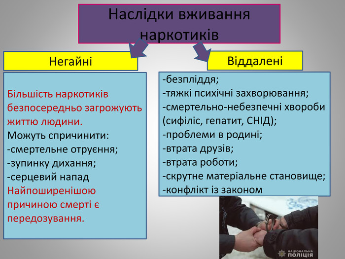

ПРОФІЛАКТИКА ТА НАСЛІДКИ ВЖИВАННЯ
НАСЛІДКИ

Сучасні вчені і практичні лікарі отримали безліч доказів шкідливої діїнаркотиків. Наукові факти диктують необхідність позбутися добросердного ставлення до прийому наркотичних речовин. Наркотики мають наркотичну ітоксичну дію. Наркотична дія виявляється в тому, що вони роблять людину психічно -, а потім фізично-залежною. Токсична дія виявляється в отруйнихвластивостях наркотиків. Однак хода наркоманії не чутна, а сліди її спочатку непомітні. Наркоманія – це важка хвороба психіки і всього організму, яка безлікування веде до деградації особистості, повної інвалідизації та передчасної смерті. Однак до цього захворювання, на відміну від інших, людина себе призводить сама, стаючи заложником с власної дурості й необережності. По-перше, численні дослідження дії лікарських засобів свідчать про те, що на одній ті ж самі дози здорові люди реагують інакше, ніж хворі. Дію медичного препарату розраховано лише на організм у стані хвороби, тому, що прийом ліків хворою людини веде до її одужання, а здоровою – до отруєння організму і порушення його функцій. По – друге, наркотичні препарати не можна приймати потроху, оскільки це в корені суперечить їх природі. Ейфорійна дія багатьох медичних препаратів часто настає лише в разі перевищення терапевтичної дози або порушення способу їх введення. Необхідно назавжди запам’ятати, що найбільша небезпека полягає саме в першому прийому наркотику, в першому шприці!
На вівтар наркоманії в жертву приносяться власне здоров’я, здоров’я дітей, щастя близьких, це приносить шкоду оточуючим і всьому суспільству. Прийомом наркотиків людина прирікає себе на повільне самогубство. Кінець наркоманії завжди драматичний – це життєва катастрофа. Наркотичні речовини руйнують всі органи, але передусім вони згубно впливають на центральну нервову систему, яка є для них основною мішенню, тому наркотики називають нейтротипними отрутами. Після вживання наркотику мозок людини буквально ним просочується. Наркотична речовина вільно проникає в мозок і насичує його тканину. Це спричиняє нейротоксичні явища: настають кисневе голодування і порушення провідникової регуляції між основними центрами нервової системи. Великі дози наркотику спричиняють втрату чутливості,параліч нервових закінчень, а також загибель незамінних, з найменшим механізмом нервових клітин мозку. Наркотики вражають насамперед найскладніший вищий відділ нервової системи – кору головного мозку.Ослаблення психічної діяльності, її занепад відбуваються у наркоманів набагато швидше ніж у алкоголіків. У цьому разі передусім змінюється ядро особистості наркомана, порушуються головні людські риси, нівелюються індивідуально-особистісні особливості, різноманіття психічного життя. У тих осіб, які почали вживати наркотики у період становлення особистості (у підлітковому віці) протягом 2-5 років формуються стійкі паталогічні особистісні зміни, їх поведінка стає психоподібною, часто поєднуються з антисоціальними і асоціальними діями. Якщо наркоманом стають у пізнішому віці, деформація особистості менш виражена, але спостерігається значне зниження пам’яті не лише на поточні дії, але й збіднюється запас знань. Наркоманія призводить до зниження інтелекту. Сильно знижується здібності до вищих асоціацій, творчості. Коло інтересів різко звужується і обмежується основною метою – добути наркотик.
Настрій надто нестійкий – він різко коливається від дратівливості до апатії, від депресії і туги до короткого стану добросердя. Згодом емоції тьмяніють. Наркотики, потрапляючи до організму, дезорганізують сприйняття кольору, форму предметів, звуків, втрачається відчуття часу і простору. У деяких випадках можливе формування хронічних психозів, що нагадують шизофренію, з маренням, галюцинаціями. У разі пригнічення функції ендокринних залоз знижується основний обмін, внаслідок цього знижується температура тіла, виникають симпатьоадреналінові кризи, що спричиняють головний біль, серцебиття, збліднення обличчя, остуду підвищення або зниження артеріального тиску. Внаслідок постійної інтоксикації може розвинутися цукровий діабет й інші ендокринні захворювання, сповільнюється4ріст і розвиток м’язової системи, страждає статева функція. У чоловіків розвивається статеве безсилля, у жінок відмічають розлади менструального циклу, викидні, передчасні роди.
У дитини, народженої від матері – наркоманки, з перших годин життя виявляють ознаки наркоманії. Її організм вимагає тих наркотиків, які він отримував з кров’ю від матері. Позбавляючись наркотику після народження,вона реагує на це судомами, плачем або іншими проявами, властивими дорослим наркоманам у стані абсистенції. Часто ці діти народжуються з фізичною потворністю або фізичними відхиленнями, у них спостерігається затримка психічного розвитку, аж до вираженого недоумства, крім того часто такі новонароджені бувають не життєздатні. У наркоманів, особливо в тих, які вдихають наркотичні отруєння,вражаються органи дихальної системи, пригнічується їх функція. У цьому разі страждають як верхні дихальні шляхи, так і легені. Наркомани часто страждають на такі специфічні й інфекційні захворювання, як вірусний гепатит,стафілококовий ендокардит, сифіліс, правець, пневмонія, запалення вен(тромбофлебіт), гнійничкові та інші захворювання шкіри. У наркоманів часто бувають захворювання, які здоровим людям не властиві.
Щоб визначити наслідки дії наркотиків, не завжди потрібне лікарське обстеження, іноді за зовнішнім виглядом можна визначити характер захворювання. Насамперед впадає в очі фізичне виснаження. Наркомани худі,бліді, виснажені, виглядають набагато старшими за свій вік, сонливі, втомлені,мляві, до всього байдужі. Обличчя їх спотворені ранніми зморшками, жовтувато-сірого відтінку, шкіра витончена, поступово робиться сухою, старою,лущиться, часто пігментована. Нерідко розвивається екзема. Організм зневоднений, позбавлений необхідного запасу вітамінів і білків. У наслідок порушення живлення волосся наркомана, як правило, рано сивіють і лисіють, рідке волосся втрачає блиск, стає ламкими. Порушення трафіку відбивається і на нігтях: нігтьові пластинки по товщині, зморшкуваті, ламкі,розшаровуються. Зуби вражаються карієсом. “Гнилі” зуби і парадантид –звичне явище у зовнішності молодого наркомана. Через декілька років прийому наркотиків молодих людей не має більшої частини зубів.
Усе це свідчить, що наркоманія – дуже важке захворювання, що здебільшого призводять до ранньої інвалідизації і різкого скорочення тривалості життя. З упевненістю можна сказати, що кожна нова ін’єкція затягування або прийом у середину наркотичних речовин неминуче скорочують життя. Непомітно підточуючи і руйнуючи весь організм наркотичні отрути скорочують життя в 4-5 разів. Як правило, третина наркоманів вмирають напротязі 5 років після початку вживання наркотиків, звичайно середній вік життя хронічного наркомана не перевищує 30 років, тому що організм не може витримати постійного виснаження. Смертність серед любителів наркотиків дуже висока.
ПРОФІЛАКТИКА
Стан захворювання на наркоманію.
Проблема наркотизації сучасної молоді настільки гостра, що вживання неповнолітніми, юнаками і
дівчатами наркотичних речовин стає небезпечним соціальним явищем. 60-70 відсотків усіх правопорушень і
злочинів молодь скоює у стані алкогольного сп’яніння. Проте, 70 % молодих людей жалкують, скажімо, що
мають пристрасть до паління, але говорять, що їм не вистачає сили волі відмовитися, 65 % - вказують, що
відчувають негативний вплив на своє здоров’я (поганий апетит, слабкість, нерідко нудота, часті простудні
захворювання, болі в шлунку, однак потяг переважає, і вони продовжують палити).
За останні роки майже вдвічі зросла кількість осіб, які перебувають на обліку в медичних закладах із
діагнозом наркоманія. Статистичні дані про рівень і динаміку наркотизації відображають лише зовнішні
тенденції цього небезпечного явища. Є підстави вважати, що кількість споживачів наркотичних засобів у 10
разів більша, ніж за офіційними даними. Крім того, велику кількість осіб залучено до зберігання та
розповсюдження наркотиків, причому наркоманія охоплює не тільки молодь, що викликає педагогічне
занепокоєння, а і зовні благополучних підлітків.
Наркотизації суспільства активно сприяють такі негативні фактори, як різке соціальне розшарування
сімей, неврівноваженість психоемоційного фону виховання підлітків, їхня соціалізація в умовах знецінення
загальнолюдських принципів моралі, дегуманізація ставлення до найвразливіших соціальних груп тощо.
Безперечним є і той факт, що Україна потрапила в сферу дії міжнародного наркобізнесу, і це впливає
на динаміку наркотизації суспільства.
Спостерігається тенденція вживання більш небезпечних наркотичних засобів, змінюється структура
наркотизації. Сучасні підлітки вже з 11 - 12 років починають використовувати опіатоподібні і коноплеві
культури. Сучасна молодь навіть не приховує, які психотропні та наркотичні засоби вживає.
Наркотики руйнують психіку молодих людей, зумовлюють відмову від позитивних настановлень на
здоровий спосіб життя, породжують мотиви прийняття хибних рішень, у деяких випадках провокуючи навіть
до суїциду. Існує багато поглядів на те, чому людина звертається до наркотиків. Якими б не були ці причини
– небезпека наркоманії очевидна. Нелегальний обіг наркотичних засобів, психотропних речовин і прекурсорів
набуває все більш широкого розмаху, стає надзвичайно серйозним соціальним фактором, негативно впливає
на стан здоров’я і добробут людей, а також розвиток суспільства в цілому.
Наркотики набувають якостей складових молодіжної „культури” як паління та вживання алкогольних
напоїв. Набирає негативного резонансу проникнення наркотиків із суто кримінального середовища до місць
масового проведення дозвілля та в навчальні заклади.
Всі особи незалежно від того, потрапляють вони в залежність від наркотичних засобів чи ні,
утворюють великий ринок споживачів наркотиків, який у свою чергу стимулює їх виробництво. Наркобізнес
перевищує всі інші види злочинного бізнесу в зв'язку з низькою собівартістю наркотиків та необмеженістю
попиту.
Так, у 2009 році було виявлено за 150 фактів правил обігу отруйних та сильнодіючих лікарських
засобів, які містять підконтрольні речовини; з незаконного обігу вилучено майже 20 тис. капсул трамадолу
(за даними МВС). Постановою Кабінету Міністрів України від 04.06.2008 № 518 отруйний лікарський засіб
трамадол внесено до списку № 1 таблиці 2 переліку наркотичних засобів. З метою виконання вимог
керівництва держави з питань урегулювання обігу трамадолу відповідно до антинаркотичного законодавства
на території області проводяться заходи, спрямовані на встановлення каналів витоку трамадолу в незаконний
обіг і осіб, причетних до цього.
Соціально-педагогічна профілактика наркоманії — вид соціальної діяльності, що спрямована на
проведення освітньо-профілактичних заходів та реалізацію педагогічних моделей впливу на особистість з
метою попередження вживання наркотичних засобів, алкогольних напоїв. Ґрунтується на своєчасному
виявленні та виправленні негативних інформаційних, педагогічних, психологічних, організаційних факторів,
що зумовлюють відхилення в психічному та соціальному розвитку дітей і молоді, у їхній поведінці, стані
здоров’я, а також в організації життєдіяльності й дозвілля.
Зміст соціально-педагогічної профілактики наркоманії:
- формування установок (відношень, мотивів, моделей поведінки) на життя без наркотиків;
- поширення профілактичної інформації (друкована продукція, засоби масової інформації,
міжособистісні стосунки, інші форми соціальної роботи);
- формування умінь і навичок здорового способу життя;
- застереження формування пронаркотичних моделей поведінки;
- ініціювання педагогІчно-змістовної діяльності з профілактичної роботи;
- організація заходів щодо виконання програми нормальної поведінки;
включення до міжнародних проектів питань з профілактики наркотизації, поширення передового
міжнародного досвіду з зазначеної проблеми;- превентивна робота з проблем пияцтва, алкоголізму, вживання
тютюну серед неповнолітніх і молоді;
- пропагандистські заходи до міжнародних свят, Всесвітніх днів без тютюну, алкоголю, наркотиків.
Види та форми соціальної профілактики алкоголізму, наркоманії:
- наукова робота з визначення факторів, що впливають на характер процесу наркотизації, і розробка
науково обґрунтованих рекомендацій щодо соціально-педагогічної профілактики;
- організаційно-педагогічні заходи щодо створення середовища, яке виховує, за місцем проживання
дітей і молоді (робота консультаційних пунктів профілактики наркотизації з проблем освіти, виховання,
організації дозвілля, працевлаштування тощо);
- педагогічне втручання в ситуацію збоченого пронаркогенним, проалкогольним фоном розвитку
окремої особистості і популяційної групи;
- соціально-педагогічний моніторинг, аналіз, надання рекомендацій, проведення заходів щодо
реалізації державних, регіональних, галузевих програм з профілактики наркотизації;
- залучення різних соціальних інститутів у процес соціалізації дітей і молоді, створення в мережі
соціальних служб умов для виявлення соціальних ініціатив, розвитку молодіжного руху та відродження
традицій національного виховання (проведення масових профілактичних свят, конкурсів, спортивних змагань,
театралізованих дій);
- організація соціально-педагогічної та освітньої роботи з дітьми з сімей групи ризику (індивідуальна
та групова робота з батьками й дітьми, з різними категоріями молоді);
- сприяння установам освіти, комітетам у справах неповнолітніх, спорту, культури та іншим
організаціям діяльності з профілактики негативних явищ серед молоді, в організації здорового способу життя
неповнолітніх і молоді.
З проблемою розповсюдження наркоманії тісно пов’язане поширення епідемії ВІЛ\СНІДу, оскільки
серед загальної кількості ВІЛ-інфікованих відсоток ін’єкційних споживачів наркотиків складає близько 80 %.
Хвороба вражає молодь у найбільш активному репродуктивному та працездатному віці. Не менш вражаючим є
факт, що офіційна кількість випадків ВІЛ\СНІД - тільки вершина айсбергу, що складає близько 10 %
фактичного числа. Вчасна профілактика, особливо з „групами ризику”, не ведеться в достатньому обсязі. Цю
проблему можна вирішити тільки комплексно, приймаючи до уваги не лише медичні, а й соціальні,
психологічні та правові аспекти.
Профілактичні заходи повинні утримувати молодь від спокуси вживання наркотиків. Ефективність
профілактичної роботи залежить від довіри населення, взаємодії з органами державної влади, освіти, охорони
здоров’я, засобами масової інфор